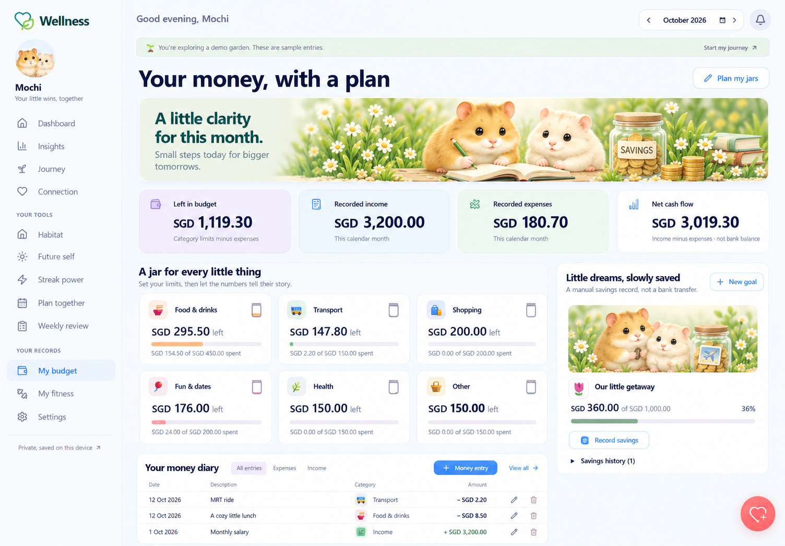
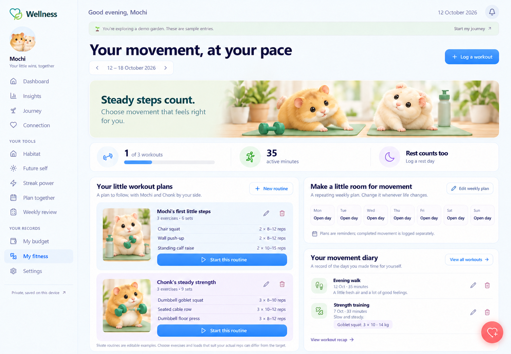
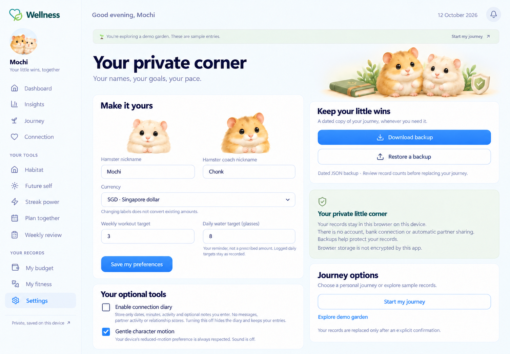

My Budget
A compact planning banner, exact monetary values, category jars, savings and money history.

My Fitness
Gentle movement artwork, visible routine actions, and a clear distinction between logged activity and plans.

Settings
Quiet portraits, readable preferences, prominent backups and separate journey options.
